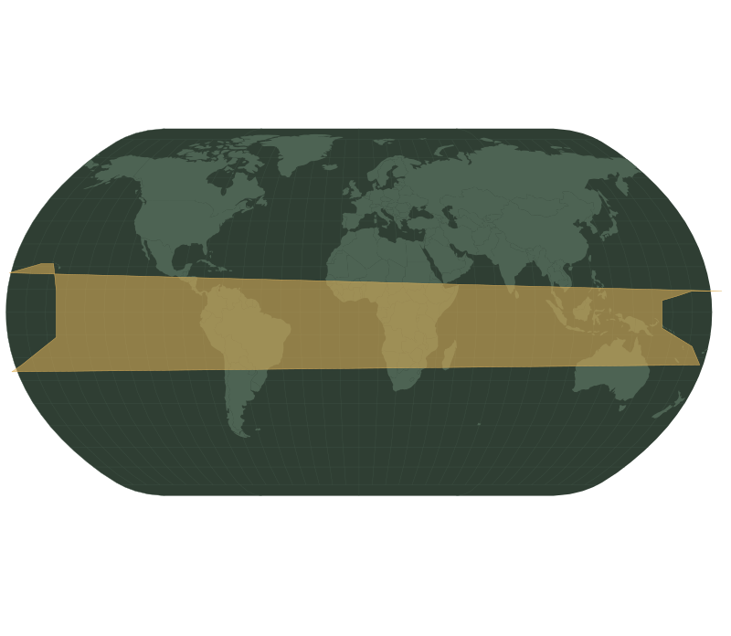

Planta · Piperáceas · Islas del Pacífico
Kava
Piper methysticum G. Forst.
Un arbusto perenne de las islas del Pacífico, de cuya raíz se prepara una bebida que se considera sagrada y que se sirve en ceremonias de bienvenida, nacimientos, bodas y funerales. Sus principios activos son las kavalactonas.134
También se llamakava · kava kava · ʻawa (Hawái) · ʻava · yaqona (Fiji) · sakau (Pohnpei) · Piper methysticum
- Qué es
- Arbusto de la familia de la pimienta, de raíz sedante
- Territorio
- Hawái, Micronesia, Vanuatu, Fiji, Samoa y Tonga
- Parte usada
- La raíz o rizoma
- Principios activos
- Kavalactonas
- Empieza y dura
- Sin datos fiables en las fuentes consultadas
- Quién guarda su memoria
- Pueblos de Melanesia, Polinesia y Micronesia
Botánica
La pimienta embriagadora
El kava es un arbusto perenne dioico del Pacífico sur, de la familia de las piperáceas, y su nombre científico Piper methysticum viene del latín «pimienta» y del griego latinizado «embriagante».15
Los cultivares son estériles y se clonan a partir de su ancestro silvestre, Piper wichmannii, de modo que hoy hay cientos de cultivares repartidos por el Pacífico.2
Las plantas se cosechan tradicionalmente hacia los cuatro años, porque las más viejas tienen más kavalactonas.2
- Familia
- Piperaceae
- Antepasado silvestre
- Piper wichmannii
- Parte usada
- Raíz o rizoma
- Cosecha tradicional
- Hacia los cuatro años
Memoria y tradición
La bebida sagrada del Pacífico
Su origen estaría en Nueva Guinea o en Vanuatu, donde navegantes la habrían domesticado a partir de Piper wichmannii.1
La evidencia botánica sugiere que se domesticó por primera vez en el norte de Vanuatu.6
El nombre «kava» procede del tongano y del marquesano, donde significa «amargo».2
El producto se considera sagrado en las culturas del Pacífico y se sirve en ocasiones importantes: dar la bienvenida a invitados, celebrar un nacimiento, bodas y funerales.3
Hoy, en muchos lugares, la bebida se toma también para socializar, reafirmar relaciones y rango, y como alternativa al alcohol.5
No se sabe si las prácticas actuales son iguales a las del pasado, ni si el consumo era más o menos ceremonial que ahora.6
En Vanuatu, el kava «tudei» o de dos días se reserva para ocasiones ceremoniales especiales y no se permite exportarlo.2
En Tonga, Fiji y Pohnpei las ceremonias de kava siguen vivas.5
En el tiempo
Sus nombres
- kava
- tongano y marquesano: «amargo»
- ʻawa
- Hawái
- yaqona
- Fiji
- sakau
- Pohnpei
Territorio y cuidado
Las islas del Pacífico

Históricamente solo se cultivó en Hawái, los Estados Federados de Micronesia, Vanuatu, Fiji, Samoa y Tonga.1
No hay pruebas de que se usara en Nueva Caledonia hasta hace unos veinte años, y hay solo indicios marginales de uso en las islas Salomón.6
Desde los años noventa se ha popularizado fuera del Pacífico, en Estados Unidos, Europa y Australia, como relajante.7
Qué ayuda
- Conocerlo como bebida sagrada de pueblos del Pacífico.
- Preferir productos que respeten a las comunidades que lo cultivan.
- Respetar las variedades reservadas a las ceremonias.
Qué contiene
Kavalactonas
Sus principios activos se llaman kavalactonas.1
Los análisis de cultivos de Fiji describen también flavokavaínas y distintos quimiotipos.8
Algunas variedades tienen una composición de kavalactonas más favorable que otras.1
Principios activos de la raíz.[1]
Compuestos descritos en cultivos de Fiji.[8]
La experiencia
Calma y relajación
Tiene propiedades psicoactivas, sobre todo efectos calmantes y relajantes.5
Se considera una de las razones de su difusión por el Pacífico: da una sensación de calma y relajación.5
No hay datos fiables de aparición ni de duración.
Esquema orientativo: cambia con la preparación, la cantidad y la persona.
Investigación
Qué se ha estudiado
Una revisión Cochrane concluyó que probablemente es más eficaz que un placebo para la ansiedad a corto plazo.1
Los extractos de kava se usaron en Europa como medicina para la ansiedad.3
Un proyecto de 2010 en Hawái reunió a científicos indígenas del Pacífico, practicantes de la cultura hawaiana y farmacólogos occidentales para estudiar la bebida.4
También se investiga su potencial en modelos de cáncer.5
Alcance de estos datosHay ensayos clínicos en ansiedad; la tradición pesa más que la clínica en el resto.
Con cuidado
Lo que conviene saber antes
Productos hechos con disolventes orgánicos o con cantidades excesivas de baja calidad se han relacionado con un mayor riesgo de efectos adversos, incluida una posible lesión del hígado.1
Se aconseja no combinarlo con alcohol ni con otros psicofármacos, y evitar el uso prolongado.7
No se ha establecido la seguridad del uso a largo plazo.7
Para seguir
Libros y medicinas emparentadas
Fuentes
De dónde sale cada dato
- Wikipedia. Kava. wikipedia.com/wiki/Kava.
- Wikipedia. Kava (borrador). wikipedia.org/wiki/User:Millieghawkins/sandbox.
- Kava: revisión de sus bebidas y extractos. pmc.ncbi.nlm.nih.gov/articles/PMC7600512.
- Contemporary Pacific and Western perspectives on ʻawa (Piper methysticum) toxicology. Fitoterapia. 2015;100:56-67. pubmed.ncbi.nlm.nih.gov/25464054/.
- Kava (revisión: toxicología y potencial en cáncer). pmc.ncbi.nlm.nih.gov/articles/PMC9315573.
- Lynch J. Kava in Oceania (extracto). muse.jhu.edu/article/37694/.
- Encyclopedia of Life. Kava (Piper methysticum). eol.org/pages/39966189/articles.
- Pasinszki T, Devi DD, Krebsz M. Bioactive compound profile and nutrition values of kava cultivated in Fiji. Horticulturae. 2025;11:1456. openresearch-repository.anu.edu.au/bitstreams/a49c9036-d63f-436b-a080-3eb7b483a2f7/download.
- Mapa APDER, con datos de Natural Earth · dominio público
- Dibujos de moléculas APDER
Última revisión: 24 de noviembre de 2026. Si ves un error, escríbenos a info@apder.org.